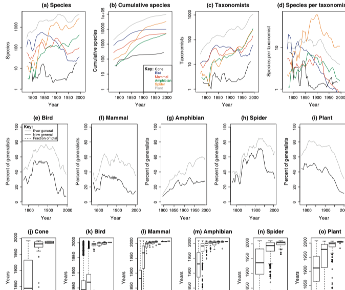

She Unnames Them
Most of them accepted namelessness with the indifference with which they had so long accepted and ignored their names. A faction of yaks protested. They said that “yak” sounded right. They discussed the matter all summer. The council of elderly females finally agreed that though the name might be useful to others it was so redundant from the yak point of view that they never spoke it themselves, and might as well dispense with it. Most of the domestic animals agreed to give their names back. The cats denied ever having had any name other than their self-given, unspoken personal names. The dogs and the verbally talented birds insisted that their names were important to them until they understood that the issue was one of individual choice. Then not one objected to parting with the generic appellations. None were left now to unname, and they seemed far closer to me than when their names had stood between us: so close that my fear of them and their fear of me became one. And the attraction that many of us felt was one with the fear. The hunter could not be told from the hunted. This was more or less the effect I had been after, and I could not now make an exception of myself. I went to Adam, and said, “You and your father gave me this. It’s been really useful, but it doesn’t exactly seem to fit.” He was not paying much attention, and only said O.K. and went on with what he was doing. I said goodbye and went out. I had only just realized how hard it would have been to explain. My words now must be as slow, new, and tentative as the steps I took going down the path away from the house, between the dark-branched, tall dancers, motionless against the winter shining.
- Ursula K. Le Guin, The New Yorker, January 13, 1985
A crash course in nomenclature.
Codes of nomenclature exist for the "major" groups of organisms.
While I think most would agree that if we had started nomenclature knowing what we know now about phylogeny, we wouldn't have done it they way we did. However, there is a huge legacy of existing names, and data linked to those names, making fundamental change unlikely.
As an example of the compromise the current system requires, the Microsporidia are treated under the zoological code (see A new dawn for the naming of fungi: impacts of decisions made in Melbourne in July 2011 on the future publication and regulation of fungal names, http://dx.doi.org/10.3897/mycokeys.1.2062), despite being fungi (and hence should be under the botanical code, although fungi are actually more closely related to animals than plants).
Names serve as identifiers, and some have argued that in general identifiers should be opaque (see Universal Resource Identifiers -- Axioms of Web Architecture), that is, we shouldn't read anything into the name itself.
Taxonomic names aren't opaque, although they can mislead us (a species name minor need not actually be small). Binomials in particular are invested with meaning. If two species are in the same genus, we expect that they are more closely related to each other than to a species in another genus. If this isn't the case there is a strong incentive to change the names to reflect the relationship of the taxa. Sometimes this is not a trvial undertaking, as shown by the case of Drosophila melanogaster.
A recent example of the clash between having a name "make sense" and the stability of names is the case of Drosophila melanogaster, perhaps the best known model organism in biology. Based on a recent phylogeny Kim van der Linde argued that because the genus Drosophila melanogaster was paraphyletic, should be renamed Sophophora melanogaster (see Revising the paraphyletic genus Drosophila sensu lato for details).
Below is a tree from TreeBASE (TB2:Tr20084) showing the relationship between Drosophila species:
Below is a summary of the major groups of Drosophila:
The fundamental problem posed by Drosophila is that the existing taxonomy doesn't fit the tree. To fix this we could:
At core of argument is notion that Linnean names have to match phylogeny.
How would you assess the possible disruption caused by renaming the fruit fly Drosophila melanogaster to Sophophora melanogaster?
How could you deal with Drosophila melanogaster changing its name to Sophophora melanogaster?
Resolving what name to use for a taxon can require extensive bibliographic research, and in theory the entire scientific literature from Linneaus (1758 for animals) onwards is relevant (bacteria started with a clean slate in 1980).
Furthermore, there are few constraints on where a name can be published (but animal names can't be published online only [we've heard of this Internet thingy but we're having no truck with it], although this is changing (plant names can be published online only). As a consequence, names of organisms can be published in very obscure journals.
In an effort to try and link animal names to their original description online I've created http://bionames.org/. Hundreds of thousands of names are linked to the original publication. If the publication is freely available it is displayed on the site.
A more recent version of this resource is Species-Cite, which tries to link taxonomic names to both publications and people.
If two names are the same but refer to different organisms then those names are homonyms. For example, in July 2010 Lambert et al. (The giant bite of a new raptorial sperm whale from the Miocene epoch of Peru, http://dx.doi.org/10.1038/nature09067) published a paper in Nature that described an extinct sperm whale possessing the biggest bite of any tetrapod known. They named this formidable predator Leviathan melvillei, the genus name Leviathan being derived from the Hebrew 'Livyatan', the species name honouring Herman Melville (author of Moby Dick). As appropriate as this name was, it quickly ran foul of the rules of zoological nomenclature because Leviathan had already been used 169 years ago for an extinct species of mammoth (Description of Missourium, or Missouri leviathan, http://dx.doi.org/10.5962/bhl.title.35985). Although the name Leviathan Koch had lapsed into obscurity (as a synonym of Mammut Blummenbach) its existence meant the newly discovered whale had to be renamed, which it duly was in a month after the original publication.
Homonyms cause obvious problems when searching for data. If the same name is used for more than one taxon, then you may get a mixture of data for two unrelated taxa. Databases such as EOL maintain lists of homonyms (see Homonyms on EOL) to keep track of these problematic names.
A special case of homonym are names that are used in different nomenclatural codes, e.g. Morus is both a plant and an animal. Many of these are included in EOL's homonym collection, but there is a database devoted just to hemihomonyms at http://herba.msu.ru/shipunov/os/homonyms/index.php.
Names can change over time, so that a single taxon can acquire a suite of names (synonyms). This can drive people a bit nuts.
Ryan Schenk's http://synynyms.com tool (now sadly ofline) displays the frequency of usage of taxonomic names in literature scanned by the Biodiversity Heritage Library (BHL), and was inspired by Google's Ngram viewer.
Objective synonyms occur when only the name changes, we are making no statement about the taxon. For example, if we move Pithecanthropus erectus to the genus Homo we get Homo erectus, which is an objective synonym of Pithecanthropus erectus.
Subjective synonyms occur when we assert, based on some data, that two taxa with different names are actually the same thing. It may be based on an explicit analysis using "objective" methods, but it is considered "subjective" in the sense that it isn't simply a logical consequence of nomenclature. An example of a subject synonym is the shrimp Rimicaris aurantiaca (described in A New Species Of Rimicaris (Crustacea: Decapoda: Bresiliidae) From The Snake Pit Hydrothermal Vent Field On The Mid atlantic Ridge, which subsequent genetic data showed likely to be juveniles of an already described species, Rimicaris exoculata (see Molecular systematics of shrimp (Decapoda: Bresiliidae) from deep-sea hydrothermal vents, I: Enigmatic 'small orange' shrimp from the Mid-Atlantic Ridge are juvenile Rimicaris exoculata).
One of the challenges of dealing with biological classifications is simply navigating them. The following are examples of visualising classifications.
This is a simple viewer that uses the same interface as online maps to navigate a large tree.

This visualisation uses the JavaScript InfoVis Toolkit and is an updated version of a demo done in 2009.
View it at http://iphylo.org/~rpage/phyloinformatics/spacetree/
A webapp to navigate three of the classifications provided by EOL (see EOL iPad web app using jQueryMobile).
View it at http://iphylo.org/~rpage/phyloinformatics/eoliphone/.
(this app no longer works due to changes in EOL's API and adoption of HTTPS)
This visualisation is an updated version of a demo done in 2008.
View it at http://iphylo.org/~rpage/phyloinformatics/treemap/
EOL had a prettier treemap that was hosted at http://synthesis.eol.org/media/treemap but is now gone.
View it at Lifemap

View it at OneZoom
In many ways browsing classifications is similar to navigating the file system of a computer. There is a huge computer science literature on this problem, and some examples have made it into Hollywood movies:
The treevis.net site provides an extensive gallery of tree visualisations.
Browse treevis.net and pick a visualisation that you think would be useful for browsing classifications. What properties are looking for?
In this exercise we use Google's Ngram Viewer to explore the changing frequency of use of a name. The Ngram viewer is a fun tool to track how language changes. Enter some taxonomic names separated by a comma, e.g.:
Go to BioNames and explore the timeline of new taxa. For example, you can see the timeline for animals:
What patterns do you see? Can you explain the peaks and troughs? What do you conclude about the current rate of description of new species?
You can use the treemap to navigate through the timelines. For example, you can navigate to snakes (http://bionames.org/timeline/Animalia/Chordata/Vertebrata/Reptilia/Lepidosauria/Squamata/Serpentes):
Why is there such a peak of new snake names in 2012? (Note, you can click on the peak in the graph to see a list of papers published that year).
A major visualisation challenge is viewing large trees, whether classifications or phylogenies. In this exercise we will compare three visualisations:
Partly driven by new technology, and partly driven by an exasperation with the rate of taxonomic description, some researchers have developed DNA "barcodes" to help both identify existing species and discover new ones.
"Dark taxa" is a term with at least two meanings, one is taxa that are unknown, that is they have yet to be discovered. The other is that taxa that we have discovered and sequenced but we haven't yet named, hence they languish in sequence databases without proper scientific name (see Dark taxa: GenBank in a post-taxonomic world).

Below are two DNA barcodes that are also in GenBank. Look at each barcode, does Genbank treat them the same? If not, why not?
Above is a striking visualisation of butterfly specimens from the Natural History Museum collections. For details on how this was constructed see Marian Kleineberg's blog post and the code on GitHub.
As you browse this, can you find any groups that might not be taxonomic?
If indeed there are millions of species yet to be described then how do we name them? One suggestion is to generate new names algorithmically (a bit like What Three Words does for places). These could simply be pre-generated names that we choose from, or names that encode a measure of genetic similarity.
Taxonomists are continually complaining that they are underfunded, under appreciated, and in danger of going extinct. The data doesn't always support this. A controversial study "The population ecology and social behaviour of taxonomists" https://doi.org/10.1016/j.tree.2011.07.010 argued that there are more taxonomists than there have ever been, and that they may be running out of species to describe.
Getting data on taxonomists can be challenging, but we can use Wikidata to help out. Here are some example queries: